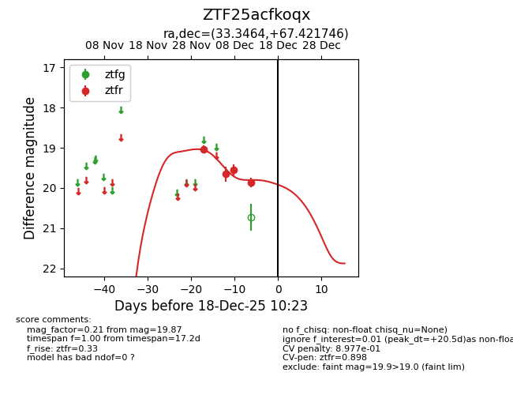
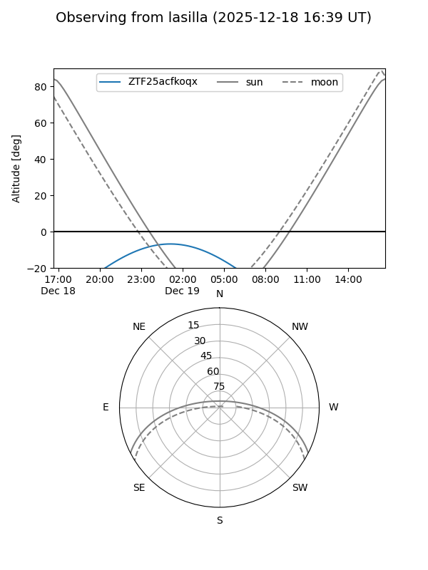
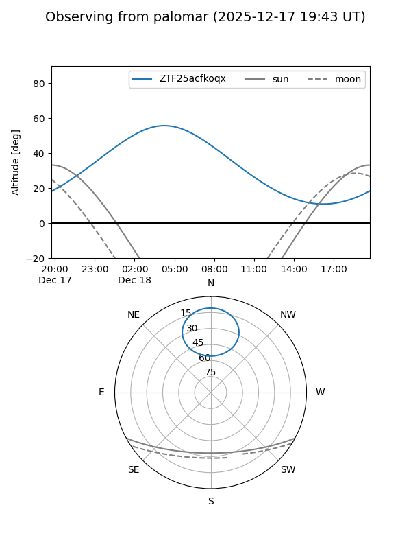

ZTF25acfkoqx
Target ZTF25acfkoqx at 2025-12-18 11:17
Aliases and brokers:
FINK: fink-portal.org/ZTF25acfkoqx
Lasair: lasair-ztf.lsst.ac.uk/objects/ZTF25acfkoqx
ALeRCE: alerce.online/object/ZTF25acfkoqx
alt names
ZTF25acfkoqx (ztf,fink_ztf)
Coordinates:
equatorial (ra, dec) = 33.3464,+67.42175
equatorial (HMS+DMS) = 02:13:23.13,+67:25:18.29
galactic (l, b) = (130.6945,+5.79337)
Photometry
last ztfr=19.87
4 ztfr detections
Lightcurve

Visibility


Additional plots